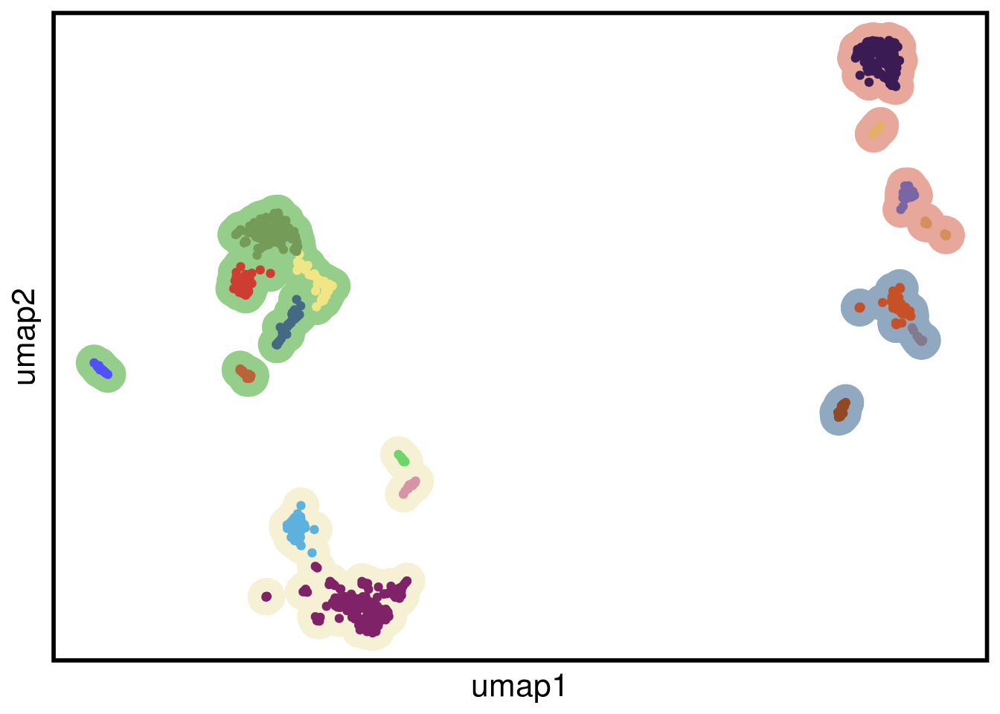
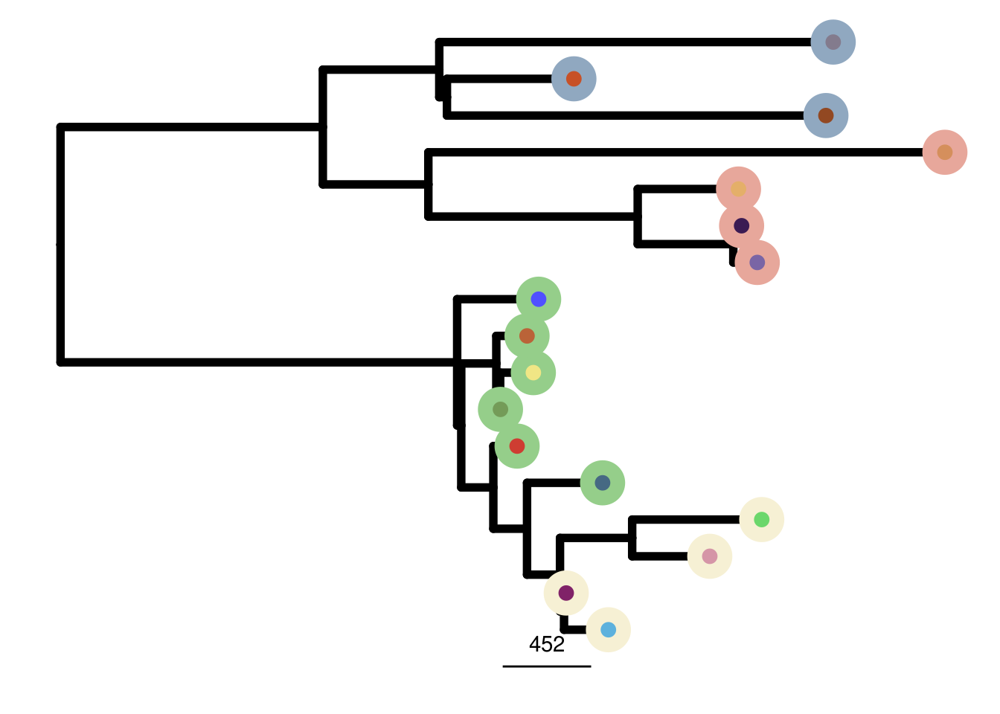
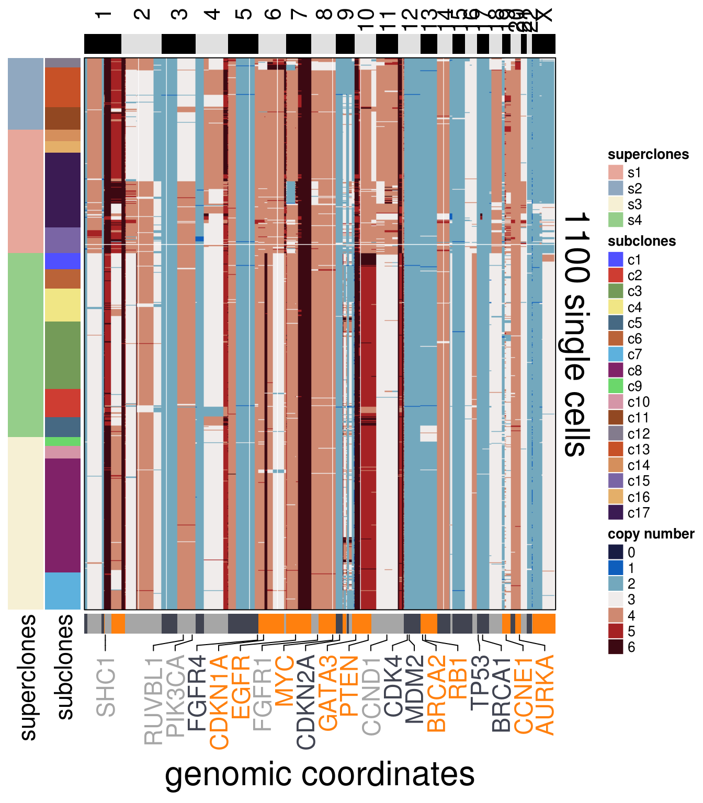
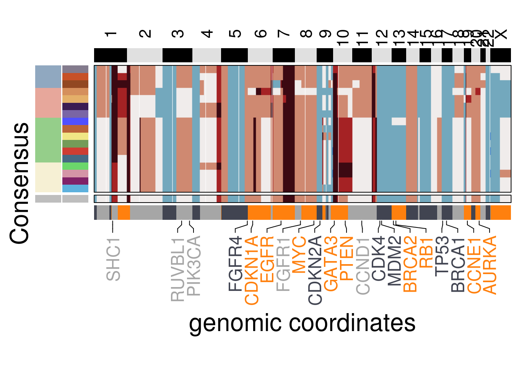

2 Tumors
2.1 TN1
# ~~~~~~~~~~~~~~~~~~~~~~~~~~~~~~~~~~~ Tue Nov 24 17:13:42 2020
# Tumors Heatmaps/Consensus/Trees
# ~~~~~~~~~~~~~~~~~~~~~~~~~~~~~~~~~~~ Tue Nov 24 17:13:47 2020
TN1_ploidy <- 3.45
TN1_popseg_long_ml <- readRDS(here("extdata/merge_levels/TN1_popseg_long_ml.rds"))
TN1_umap <- run_umap(TN1_popseg_long_ml)## Constructing UMAP embedding.## Building SNN graph.## Running hdbscan.## cluster n percent
## c1 32 0.02909091
## c10 24 0.02181818
## c11 45 0.04090909
## c12 19 0.01727273
## c13 79 0.07181818
## c14 23 0.02090909
## c15 51 0.04636364
## c16 23 0.02090909
## c17 149 0.13545455
## c2 56 0.05090909
## c3 134 0.12181818
## c4 66 0.06000000
## c5 40 0.03636364
## c6 39 0.03545455
## c7 74 0.06727273
## c8 228 0.20727273
## c9 18 0.01636364## Done.TN1_ordered <- order_dataset(popseg_long = TN1_popseg_long_ml,
clustering = TN1_clustering)
plot_umap(umap_df = TN1_umap,
clustering = TN1_clustering)## Joining, by = "cells"
TN1_consensus <- calculate_consensus(df = TN1_ordered$dataset_ordered,
clusters = TN1_ordered$clustering_ordered$subclones)
TN1_gen_classes <- consensus_genomic_classes(TN1_consensus,
ploidy_VAL = TN1_ploidy)
TN1_me_consensus_tree <- run_me_tree(consensus_df = TN1_consensus,
clusters = TN1_clustering,
ploidy_VAL = TN1_ploidy)
TN1_annotation_genes <- c("SHC1",
"RUVBL1",
"PIK3CA",
"FGFR4",
"CDKN1A",
"EGFR",
"FGFR1",
"MYC",
"CDKN2A",
"GATA3",
"PTEN",
"CDK4",
"MDM2",
"BRCA2",
"RB1",
"TP53",
"BRCA1",
"CCNE1",
"AURKA",
"CCND1")plot_heatmap(df = TN1_ordered$dataset_ordered,
ploidy_VAL = TN1_ploidy,
ploidy_trunc = 2*(round(TN1_ploidy)),
clusters = TN1_ordered$clustering_ordered,
genomic_classes = TN1_gen_classes,
keep_gene = TN1_annotation_genes,
tree_order = TN1_me_consensus_tree$cs_tree_order,
show_legend = TRUE)## 'select()' returned 1:1 mapping between keys and columns## Warning: The input is a data frame, convert it to the matrix.
plot_consensus_heatmap(df = TN1_consensus,
clusters = TN1_ordered$clustering_ordered,
ploidy_VAL = TN1_ploidy,
ploidy_trunc = 2*(round(TN1_ploidy)),
keep_gene = TN1_annotation_genes,
tree_order = TN1_me_consensus_tree$cs_tree_order,
plot_title = NULL,
genomic_classes = TN1_gen_classes)## Warning: Setting row names on a tibble is deprecated.## 'select()' returned 1:1 mapping between keys and columns## Warning: The input is a data frame, convert it to the matrix.
This repository contains the scripts used for in the manuscript: Breast Tumors Maintain a Reservoir of Subclonal Diversity During Primary Expansion